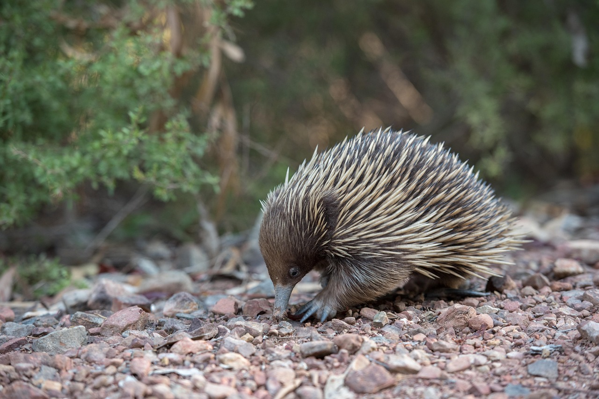

EQUIDNA
(Tachyglossidae)

HÁBITAT Y ESTILO DE VIDA
Los equidna viven principalmente en Australia y Nueva Guinea. Su hábitat incluye bosques,
praderas, montañas y zonas con vegetación donde pueden encontrar alimento y refugio.
Estos lugares les permiten excavar en el suelo o esconderse entre troncos y rocas
para protegerse de los depredadores.
Se alimentan principalmente de hormigas, termitas y otros pequeños insectos,
usando su lengua larga y pegajosa para capturarlos.
Son animales solitarios y mayormente nocturnos, por lo que suelen salir a buscar
alimento durante la noche o en horas frescas del día.
CARACTERÍSTICAS
- Tiene el cuerpo cubierto de espinas que lo protegen de los depredadores.
- Posee una lengua larga y pegajosa para atrapar insectos.
- Es un mamífero que pone huevos (monotrema).
- Tiene patas fuertes con garras que le ayudan a excavar.
- La cría nace de un huevo y se desarrolla en una bolsa temporal en el vientre de la madre.
MORE INFORMATION
MENU